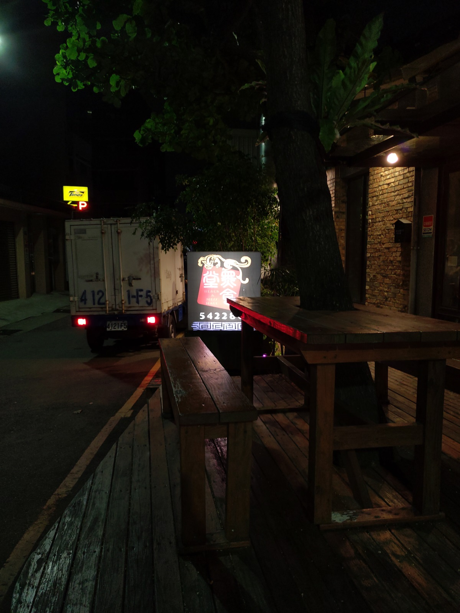
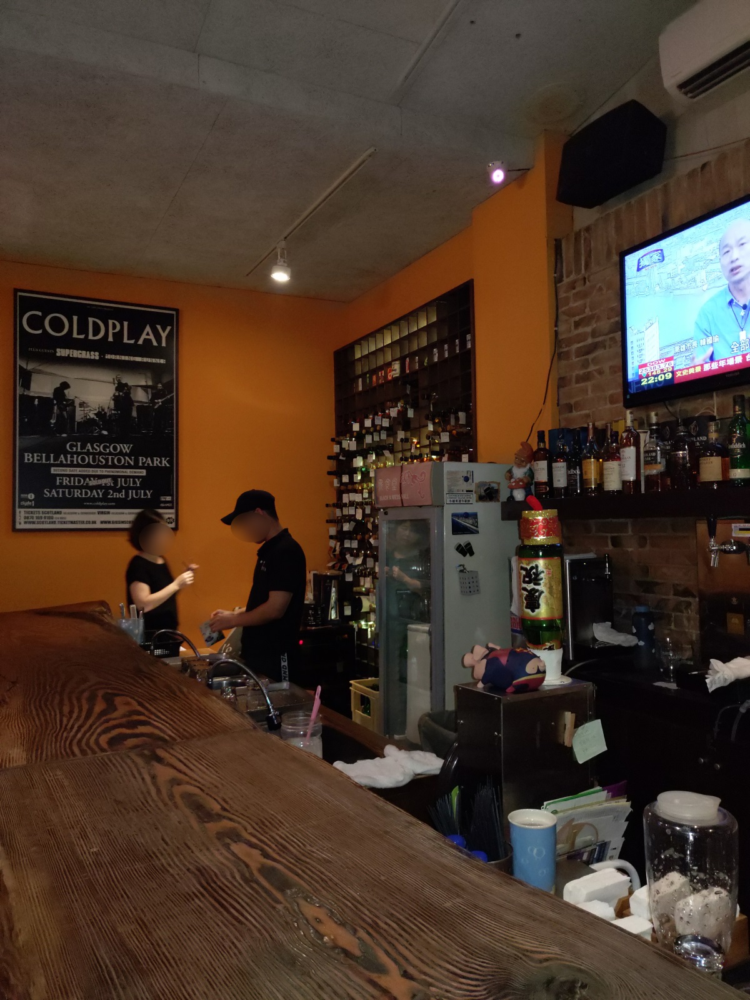
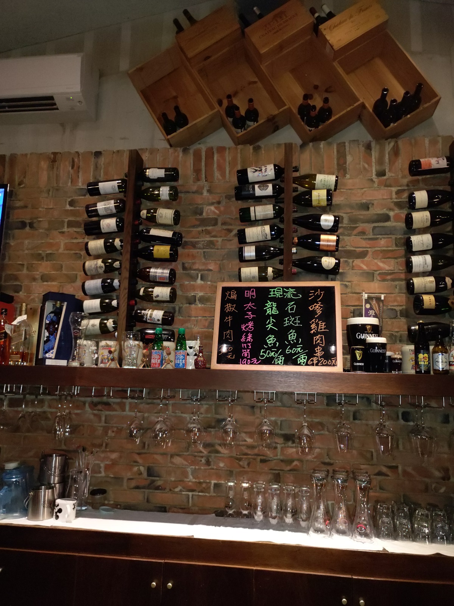
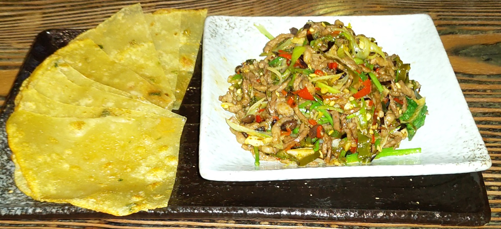
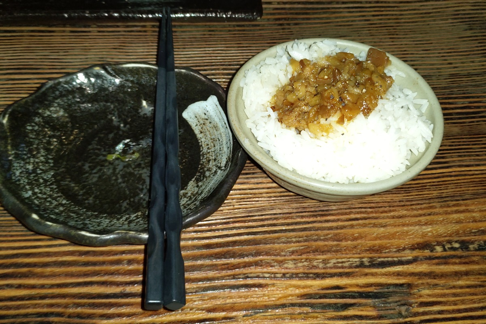
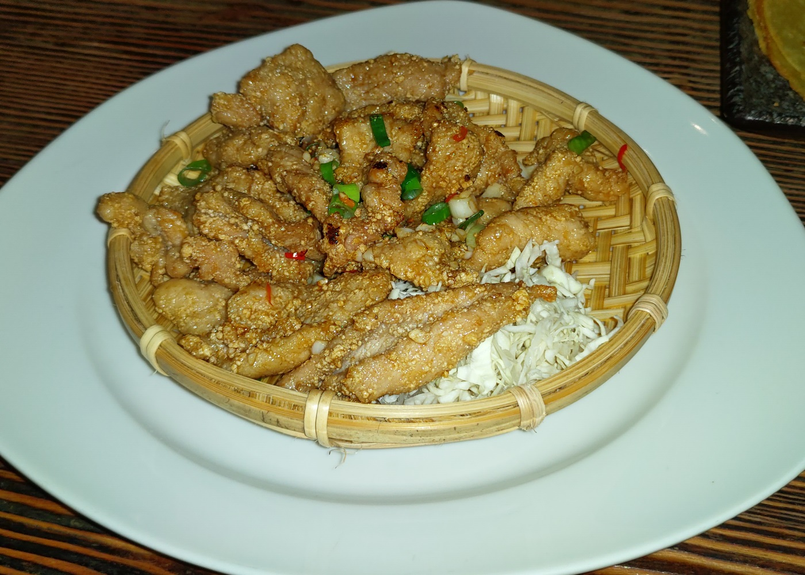
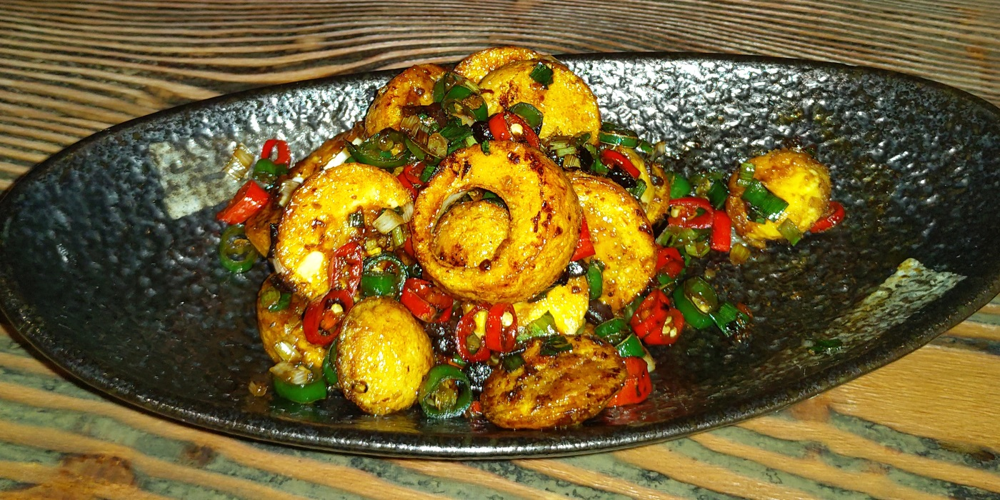

[新竹] 黑食堂經國店
Updated on 2022/Feb/7: 黑食堂收了，原址改成 樹夏坐坐 ，有保留黑食堂一些經典菜色，加上老闆自己的手釣現流鮮魚。但是最近又由原址搬到竹北成功二街。而黑哥收了黑食堂後，則是搬到竹北成功一街，先是賣石頭火鍋，後改為居酒屋 。
餐廳名稱: 黑食堂經國店
地 址: 新竹市經國路一段479巷6弄5號
營業時間: 週一~周日 18:00~02:00
新竹黑食堂在多年前有兩間店，後來一間房租到期，老闆就 乾脆集中火力顧一間店。晚上營業到凌晨兩點，多年前吃過 一次，印象不錯，今天正逢宵夜時段，乾脆來回味一下。
黑食堂大門口，附近經國路路邊停車位深夜不收費了，所以都是滿的。 有個收費停車場，空位還很多，停車方便，只是要花錢。 
內部有好幾間包廂，我只有一個人，只好坐吧台。  
煸椒牛肉，有附好幾塊薄餅，讓你包炒牛肉絲來吃，這道菜不錯。 
黑食堂滷肉飯，雖然也不差，可是記憶中的滷肉飯似乎比較好吃。 
黑食堂炸肉，雖然也不差，可是記憶中的炸肉似乎比較好吃。 
湖南燒蛋，看名字有點特殊，點點看。略有特色，是水煮蛋切片， 炒辣椒，豆豉等，味重好吃。 
其實今天點的菜很成功，每道菜都重口味，好吃。廚師手藝佳， 價格尚可，停車也方便，有機會會再回訪。